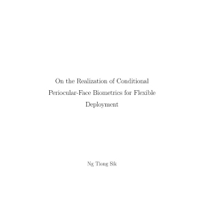
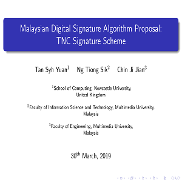
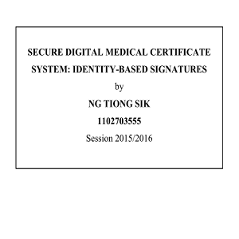
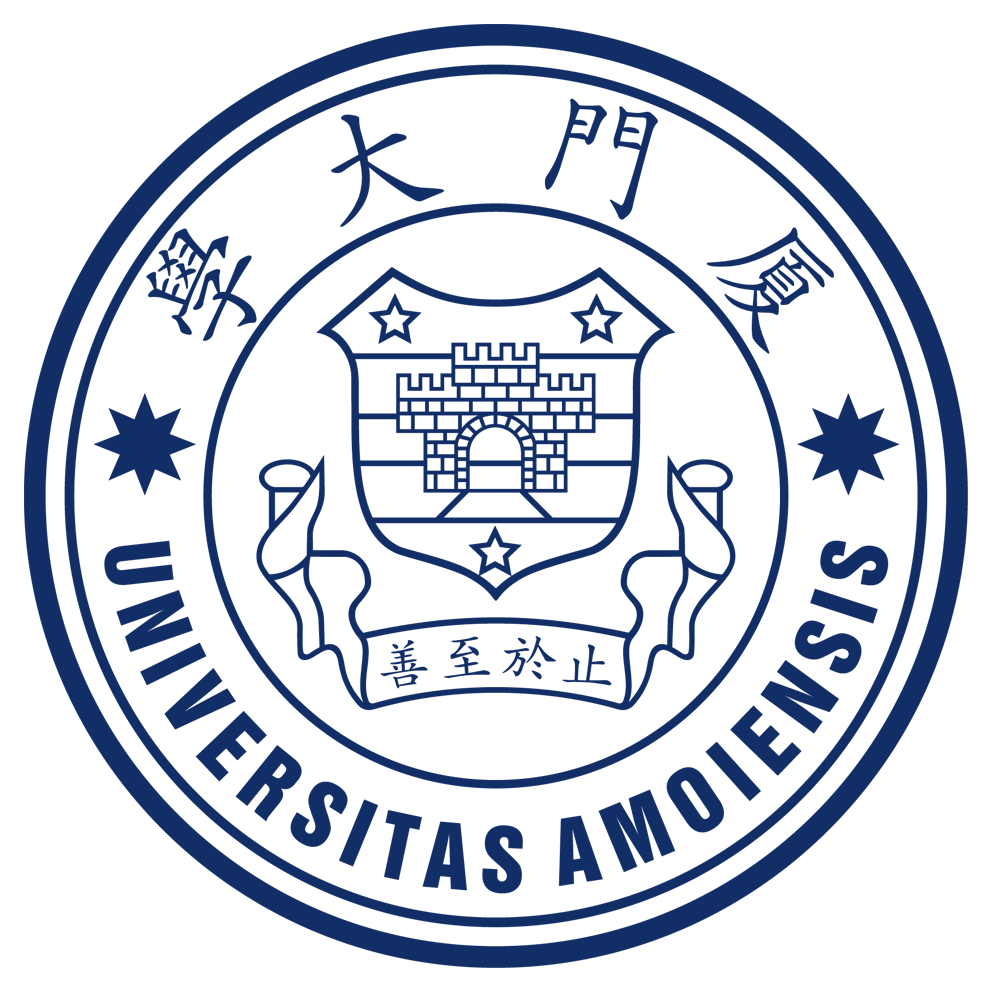
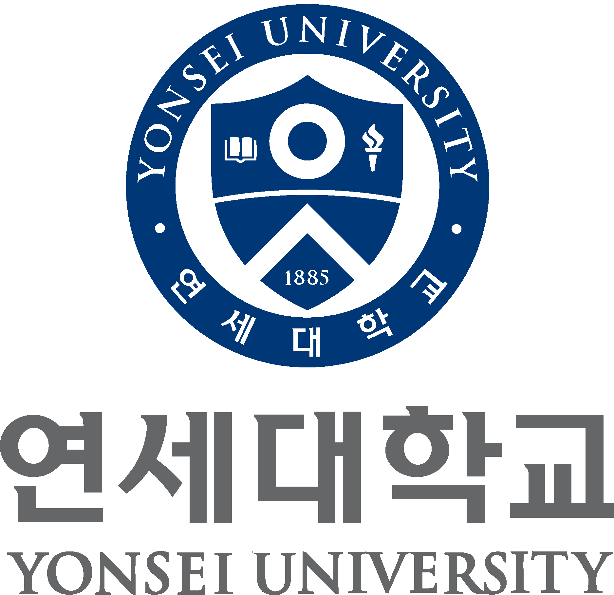

01
Flexible Biometrics Recognition
Recognition under modality mismatch, occlusion, low resolution, and deployment constraints.
Conditional biometricsCross-modality/domain matchingLow-resolution recognition
Research · Development · Teaching연구 · 개발 · 교육研究 · 開発 · 教育研究 · 开发 · 教学
Assistant Professor (Cybersecurity) · Xiamen University Malaysia 조교수 (사이버보안) · 샤먼대학교 말레이시아캠퍼스 助教 (サイバー保護) · 厦門大学マレーシア校 助理教授 (网络安全) · 厦门大学马来西亚分校
Curriculum VitaeAbout소개紹介关于
Last updated최종 업데이트最終更新最后更新 · —
Currently an Assistant Professor in Cybersecurity at Xiamen University Malaysia, with research interests spanning biometrics, computer vision, and cryptography. Research focuses on flexible and privacy-aware biometric recognition, particularly under challenging conditions such as occlusion, modality mismatch, low image quality, and practical deployment constraints. 현재 샤먼대학교 말레이시아캠퍼스에서 사이버보안 분야 조교수로 재직 중이며, 생체인식, 컴퓨터 비전 및 암호학을 주요 연구 분야로 삼고 있습니다. 특히 가림, 모달리티 불일치, 낮은 영상 품질 및 실제 배포 환경의 제약과 같은 어려운 조건에서도 적용할 수 있는 유연하고 프라이버시를 고려한 생체인식 기술에 중점을 두고 있습니다. 現在、厦門大学マレーシア校でサイバーセキュリティ分野の助教を務めており、生体認証、コンピュータビジョン、暗号学を主な研究分野としています。特に、遮蔽、モダリティの不一致、低画質、実環境への導入に伴う制約などの条件下における、柔軟性とプライバシーに配慮した生体認証技術を研究しています。 现任厦门大学马来西亚分校网络安全领域助理教授，研究方向涵盖生物识别、计算机视觉与密码学。研究重点为兼顾灵活性与隐私保护的生物识别技术，尤其关注遮挡、模态不匹配、图像质量较低及实际部署限制等复杂条件下的生物识别问题。
Received a Doctorate in Engineering from Yonsei University, with doctoral research focusing on conditional periocular-face biometrics for flexible deployment. Other areas of interest include representation learning, biometric template protection, multimodal learning, and provable security. Teaching and supervision involve undergraduate and postgraduate students in computing and cybersecurity-related fields. 연세대학교에서 공학 박사 학위를 취득했으며, 박사과정에서는 유연한 배포를 위한 조건부 눈 주위·얼굴 생체인식을 연구했습니다. 그 밖의 관심 분야로는 표현 학습, 생체인식 템플릿 보호, 멀티모달 학습 및 증명 가능한 보안이 있습니다. 또한 컴퓨팅 및 사이버보안 관련 분야에서 학부생과 대학원생을 대상으로 강의와 연구 지도를 수행하고 있습니다. 延世大学校で工学博士号を取得し、博士研究では柔軟な運用を目的とした条件付き眼周囲・顔生体認証に取り組みました。その他の研究関心には、表現学習、生体認証テンプレート保護、マルチモーダル学習、証明可能安全性があります。また、コンピューティングおよびサイバーセキュリティ関連分野において、学部生・大学院生の教育と研究指導を行っています。 于延世大学获得工学博士学位，博士研究主要围绕面向灵活部署的条件式眼周与人脸生物识别展开。其他研究兴趣包括表征学习、生物识别模板保护、多模态学习及可证明安全性。此外，也从事计算机与网络安全相关领域的本科生和研究生教学及研究指导工作。
Research연구研究研究
My research focuses on robust biometric recognition, privacy-preserving template protection, multimodal representation learning, and cryptographic security.강건한 생체인식, 개인정보 보호를 위한 생체 템플릿 보호, 다중모달 표현 학습, 암호학적 보안을 중심으로 연구합니다.頑健な生体認証、プライバシーを保護する生体テンプレート保護、マルチモーダル表現学習、暗号技術によるセキュリティを研究しています。研究重点包括鲁棒生物识别、隐私保护型生物特征模板保护、多模态表征学习与密码学安全。
Recognition under modality mismatch, occlusion, low resolution, and deployment constraints.
Protected representations, privacy-preserving recognition, and cancellable biometric templates.
Representation learning across modalities, domains, models, and challenging visual conditions.
Digital signatures, authentication, reductions, and cryptographic security in practical systems.
Selected publications in biometric recognition, computer vision, privacy-preserving biometrics, and cryptographic security.
Selected research and development projects in biometrics, cryptography, AI systems, and secure applications.

Researched deep learning-based face and periocular biometric recognition for flexible deployment under occlusion and cross-modality settings. Developed conditional embedding and biometric template protection methods for privacy-preserving recognition.

Co-developed the TNC Signature Scheme, a Malaysian digital signature algorithm proposal compatible with Schnorr signatures. Contributed to formal security proofs and C/Libgcrypt implementation under discrete logarithm and elliptic curve settings.
Slides for Technical ReportInvestigated tight security reduction techniques for digital signature schemes and cryptographic primitives. Applied formal reduction-based analysis to improve provable security guarantees under standard model assumptions.

Implemented a secure digital medical certificate prototype using identity-based signatures, ECC-based encryption, QR code generation, and server-side verification. The system was demonstrated at ITEX 2016 and received a Gold Award.
Teaching & supervision교육 및 지도教育・指導教学与指导
Courses and supervision areas across computing, biometrics, computer vision, and cybersecurity.컴퓨팅, 생체인식, 컴퓨터 비전 및 사이버보안 분야의 교육과 연구 지도를 담당합니다.コンピューティング、生体認証、コンピュータビジョン、サイバーセキュリティ分野の教育・研究指導を行っています。涵盖计算、生物识别、计算机视觉与网络安全领域的教学和研究指导。
Undergraduate computing and cybersecurity courses.컴퓨팅 및 사이버보안 학부 과목.コンピューティングとサイバーセキュリティの学部科目。计算与网络安全本科课程。
Undergraduate and postgraduate research, final-year projects, and internships.학부·대학원 연구, 졸업 프로젝트 및 인턴십 지도.学部・大学院研究、卒業研究、インターンシップの指導。本科与研究生研究、毕业设计及实习指导。
Academic, research, and industry roles across artificial intelligence, cybersecurity, software systems, and applied research.

Subsidiary of INSUNET FC
My academic training and research foundations in engineering, biometrics, and cryptographic security.

On the Realization of Conditional Periocular-Face Biometrics for Flexible Deployment
Design of Tight Security Reduction for Signature Schemes
Secure Digital Medical Certificate System: Identity-Based Signatures
Methods & tools방법론 및 도구手法・ツール方法与工具
Core techniques and research directions. 주요 연구 기법 및 연구 방향. 主要な研究手法および研究方向。 主要研究方法与研究方向。
Libraries, frameworks, development, and computing tools. 라이브러리, 프레임워크, 개발 및 컴퓨팅 도구. ライブラリ、フレームワーク、開発・コンピューティングツール。 程序库、框架、开发与计算工具。
Models and architectures used across research and development. 연구 및 개발에 활용한 모델과 아키텍처. 研究・開発で使用したモデルおよびアーキテクチャ。 研究与开发中使用的模型和架构。
Experimentation, evaluation, and development. 실험, 평가 및 개발. 実験、評価、および開発。 实验、评估与开发。
Languages used in academic and professional settings. 학술 및 전문 환경에서 사용하는 언어. 学術・専門環境で使用する言語。 学术与专业环境中使用的语言。
Engineering professional registration. 공학 분야 전문 자격 등록. 工学分野の専門資格登録。 工程领域专业资格注册。
Registered Graduate Engineer under Board of Engineers Malaysia (BEM) (GE158045A) 말레이시아 엔지니어협회(Board of Engineers Malaysia, BEM) 등록 Graduate Engineer (GE158045A) マレーシア技術者委員会（Board of Engineers Malaysia, BEM）登録 Graduate Engineer (GE158045A) 马来西亚工程师委员会（Board of Engineers Malaysia, BEM）注册 Graduate Engineer (GE158045A)
Contact연락連絡联系
For academic, research, or professional correspondence, the form below is available.학술, 연구 또는 업무 관련 연락은 아래 양식을 이용하실 수 있습니다.学術・研究・業務上の連絡には、以下のフォームをご利用いただけます。学术、研究或专业事务相关的联系可使用以下表单。